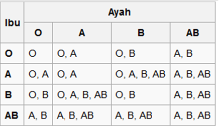

Karl Landsteiner adalah seorang ilmuwan Austria keturunan Yahudi yang mendalami bidang bio pengobatan. Ia lahir pada 14 Juni 1868 di Vienna dan meninggal pada 24 Juni 1943 setelah diserang penyakit jantung yang diidapnya (usia 75 tahun). Karl Landsteiner menemukan bahwa darah manusia terbagi menjadi 4 kelompok yaitu golongan darah O, A, B, dan AB (dikenal dengan penggolongan darah ABO) pada tahun 1909. Atas penemuannya, Ia mendapatkan penghargaan Nobel dalam bidang Fisiologi atau Kedokteran pada tahun 1930.
Karl Landsteiner menemukan 3 dari 4 golongan darah (yang kemudian disebut sistem ABO) dengan cara memeriksa golongan darah beberapa teman kerjanya. Percobaan sederhana itu dilakukan dengan mereaksikan sel darah merah dengan serum dari para donor. Hasil percobaan tersebut menghasilkan dua macam reaksi (menjadi dasar antigen A dan B, dikenal dengan golongan darah A dan B), dan satu macam tanpa reaksi (tidak memiliki antigen, dikenal dengan golongan darah O). Kesimpulannya adalah terdapat dua macam antigen A dan B di dalam sel darah merah yang disebut golongan A dan B, atau sama sekali tidak ada reaksi yang disebut golongan O. Kemudian, Alfred Von Decastello dan Adriano Sturli—kolega Karl Landsteiner—menemukan golongan darah AB. Pada golongan darah AB, kedua antigen A dan B ditemukan secara bersamaan pada sel darah merah, sedangkan pada serum tidak ditemukan antibodi.
Pada tahun 1916, Karl Landsteiner menikah dengan Helen Wlasto. Sebelum menikah, Karl Landsteiner adalah anak seorang hakim yang juga merupakan bekas wartawan terkenal. Ia mendapatkan pendidikan dalam bidang pengobatan di Universitas of Vienna. Minatnya terhadap pengobatan sudah dirasakannya sejak sekolah. Hingga tahun 1891, ia menerbitkan kertas kajiannya mengenai pengaruh diet terhadap komposisi darah. Untuk mendalami pengetahuannya dalam bidang kimia, Karl Landsteiner melanjutkan pelajarannya di Zurich dan juga di Munich selama 5 tahun.
Karl Landsteiner bekerja dengan banyak ilmuwan seperti Prof. A. Weichcelbaum yang menemukan bakteri yang menyebabkan meningitis, serta Fraenckel yang menemukan pneumokokosis (pneumococcosis). Hingga tahun 1919, setelah 20 tahun bekerja dalam bidang anatomi patologi, Karl Landsteiner berhasil menerbitkan banyak penelitian, terutama mengenai morbid anatomi dan imunisasi. Bahkan ia juga menemukan faktor imunisasi yang diberi nama "hapten". Ia juga berjasa atas penelitiannya mengenai paroksismal hemoglobinuria (paroxysmal haemoglobinuria). Hasil kajiannya menunjukkan punca poliomielitis (poliomyelitis) boleh dipindahkan kepada monyet dengan cara menyuntik bahan yang disediakan dari tulang belakang anak-anak yang mati akibat penyakit ini. Karl Landsteiner sebenarnya banyak memberikan sumbangan dalam bidang anatomi patologi, histologi, dan imunologi. Ia juga menjadi profesor emeritus di Intsitut Rockfeller pada 1939.
Definisi Golongan Darah
Golongan darah adalah pengklasifikasian darah dari suatu individu berdasarkan ada atau tidak adanya zat antigen warisan pada permukaan membran sel darah merah. Hal ini disebabkan karena adanya perbedaan jenis karbohidrat dan protein pada permukaan membran sel darah merah tersebut. Dua jenis penggolongan darah yang paling penting adalah penggolongan ABO dan Rhesus (faktor Rh). Di dunia ini sebenarnya dikenal sekitar 46 jenis antigen selain antigen ABO dan Rh, hanya saja lebih jarang dijumpai. Transfusi darah dari golongan yang tidak kompatibel dapat menyebabkan reaksi transfusi imunologis yang berakibat anemia hemolisis, gagal ginjal, syok, dan kematian.
Golongan darah manusia ditentukan berdasarkan jenis antigen dan antibodi yang terkandung dalam darahnya, sebagai berikut:
Secara umum, golongan darah O adalah yang paling umum dijumpai di dunia, meskipun di beberapa negara seperti Swedia dan Norwegia, golongan darah A lebih dominan. Antigen A lebih umum dijumpai dibanding antigen B. Karena golongan darah AB memerlukan keberadaan dua antigen, A dan B, golongan darah ini adalah jenis yang paling jarang dijumpai di dunia.

Tabel pewarisan golongan darah kepada anak.
Rhesus
Jenis penggolongan darah lain yang cukup dikenal adalah dengan memanfaatkan faktor Rhesus atau faktor Rh. Nama ini diperoleh dari monyet jenis Rhesus yang diketahui memiliki faktor ini pada tahun 1940 oleh Karl Landsteiner. Seseorang yang tidak memiliki faktor Rh di permukaan sel darah merahnya memiliki golongan darah Rh-. Mereka yang memiliki faktor Rh pada permukaan sel darah merahnya disebut memiliki golongan darah Rh+. Jenis penggolongan ini seringkali digabungkan dengan penggolongan ABO. Golongan darah O+ adalah yang paling umum dijumpai, meskipun pada daerah tertentu golongan A lebih dominan, dan ada pula beberapa daerah dengan 80% populasi dengan golongan darah B.
Kecocokan faktor Rhesus amat penting karena ketidakcocokan golongan. Misalnya donor dengan Rh+ sedangkan resipiennya Rh-) dapat menyebabkan produksi antibodi terhadap antigen Rh(D) yang mengakibatkan hemolisis. Hal ini terutama terjadi pada perempuan yang pada atau di bawah usia melahirkan karena faktor Rh dapat memengaruhi janin pada saat kehamilan.
Golongan Darah Lain